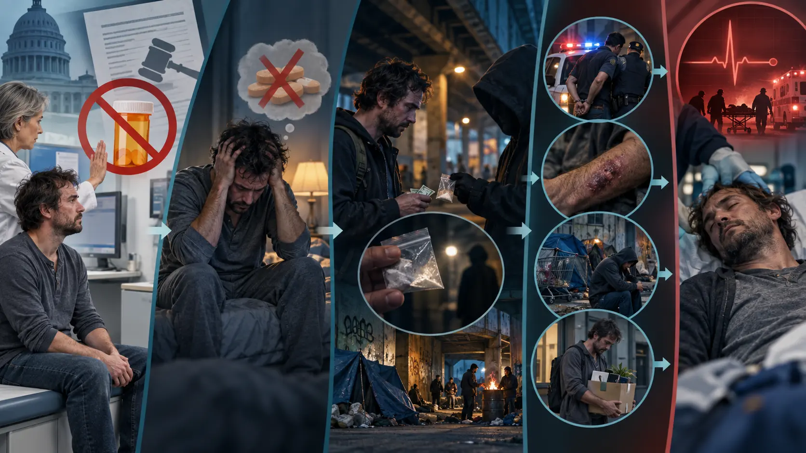
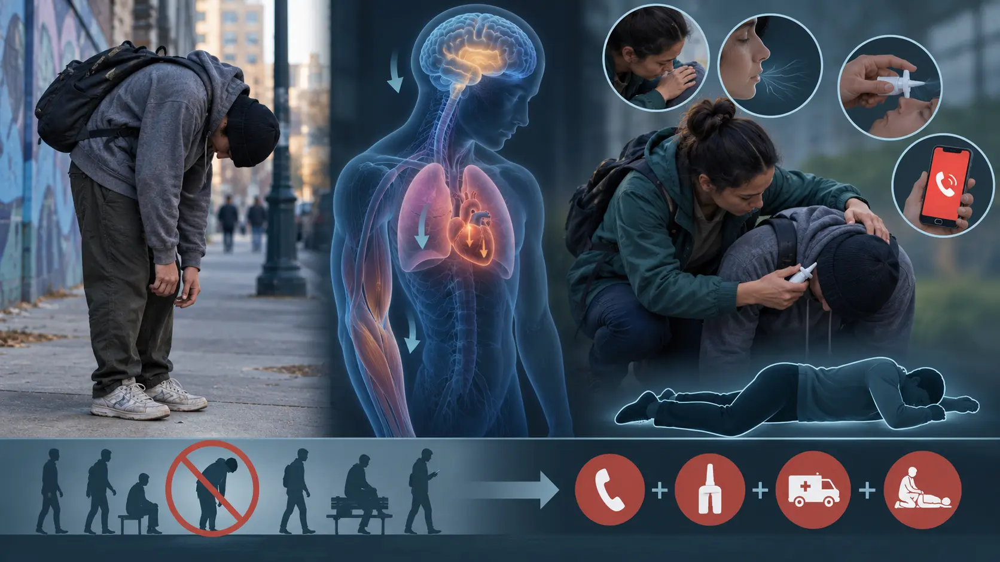

9.1 “Hurt”: When a Drug Becomes a Tool for Emotional Pain

Trent Reznor wrote “Hurt” for Nine Inch Nails’ 1994 album The Downward Spiral. Its narrator moves through self-injury, numbness, memory, regret, and drug imagery. The brief phrase the needle tears a hole
makes injection impossible to ignore, but the song’s meaning is larger than one drug or one literal biography.
The song helps us examine self-medication: a person may use a substance because it briefly changes depression, anxiety, trauma, loneliness, physical pain, or emotional numbness. Relief can reinforce use even when later consequences deepen the original distress. Those consequences are produced by an interaction among pharmacology, individual circumstances, and the social organization of use.
9.2 The “Fentanyl Fold”: What a Posture Can—and Cannot—Tell Us

Videos and street reporting sometimes call a deeply slumped, forward-bent posture the “fentanyl fold” or “opioid fold.” These are informal descriptions, not medical diagnoses. Fentanyl can produce profound opioid sedation and respiratory depression. Xylazine—also called “tranq”—is a non-opioid veterinary sedative increasingly found in the illegal supply, often with fentanyl. It can cause drowsiness, muscle relaxation, slowed brain activity, dangerously slow breathing and heart rate, and low blood pressure (NIDA).
These effects make loss of postural control and prolonged slumping biologically plausible. However, research has not established one exclusive mechanism for this exact posture, and a photograph cannot determine whether fentanyl, xylazine, another depressant, illness, exhaustion, or multiple substances are involved. The posture matters because it may be a visible warning—not because it proves a diagnosis.
1. Check
Try to wake the person and check whether breathing is slow, irregular, or absent.
2. Give naloxone
Naloxone does not reverse xylazine, but it can reverse fentanyl or another opioid that may be present.
3. Call 911
Overdose is a medical emergency. Give rescue breaths if trained and directed.
4. Stay
Remain until help arrives; place an unconscious breathing person on their side when appropriate.
Wounds are another xylazine risk. Repeated exposure is associated with painful ulcers and abscesses that can appear at or away from injection sites. Untreated wounds may become infected and, in rare severe cases, require amputation. Wound care can help even when a person continues using substances (CDC).
The unknown mixture itself is sociological evidence. In a regulated medical setting, ingredients, strength, storage, and professional response are controlled. In an illegal market, the person may not know that xylazine is present. The lifestyle risk is therefore created partly by prohibition, supply uncertainty, stigma, and limited access to low-barrier care—not only by the intended drug.
9.3 One Dependence, Three Social Pathways
Imagine the same person develops opioid dependence while receiving legitimate pain treatment. Biology does not dictate the rest of the story. The system’s response changes the person’s drug source, daily routines, relationships, exposure to violence and disease, employment, housing, and chance of survival.
9.4 Path One: Dependence Is Expelled From Medicine
Medical beginning
Pain medicine is prescribed and physical dependence develops.
Abrupt barrier
Prescribing ends without an individualized taper, adequate pain care, or opioid-use-disorder treatment.
Illegal supply
Withdrawal or untreated pain leads to heroin or illicit fentanyl of unknown strength and contents.
Compounded harm
Overdose, infection, arrest, violence, job loss, homelessness, and stigma become part of the lifestyle.
The original medical use did not automatically cause every later harm. Policy converted a known medication and clinical relationship into repeated illegal transactions. Many resulting risks—criminal records, contaminated supply, unsafe settings, and fear of seeking help—are latent dysfunctions of the legal response.
9.5 Path Two: Harm Reduction Exists, but the System Is Fragmented
Education and safety
The person learns about dependence, interactions, naloxone, and overdose prevention.
Rehabilitation attempt
Stopping is tried with medical and psychosocial support rather than punishment.
Continuing care
Counseling continues after discharge instead of treating rehabilitation as a one-time cure.
Medication treatment
Buprenorphine, methadone, or naltrexone is considered according to clinical need and patient choice.
This path is substantially safer, but it still clings to the older system when help is conditional, geographically distant, expensive, stigmatized, or interrupted. Evidence-based medication may exist while institutional rules make it hard to start or continue. Recovery becomes more likely, but stability remains vulnerable to gaps in access.
9.6 Path Three: A Complete Harm-Reduction Continuum
Before and during prescribing
Age-appropriate drug education, informed consent, careful monitoring, safe storage, and realistic discussion of dependence.
Early response
Dependence or escalating risk prompts conversation—not abandonment—and an individualized plan for pain and substance-use care.
Multiple clinical routes
A collaborative taper, rehabilitation, continued counseling, opioid-use-disorder medication, and appropriate non-opioid or opioid pain care remain available.
Whole-life support
Naloxone, drug checking, wound care, housing, employment, mental healthcare, peers, and family support protect health and social bonds.
If stopping remains extremely difficult after treatment, the clinician and patient determine a regulated plan. For opioid use disorder, methadone and buprenorphine are established medications that reduce illicit opioid use and overdose risk. Continuing or changing an opioid prescribed for pain is a separate clinical decision requiring individualized assessment; it is not guaranteed monthly prescribing and should not be confused with opioid-use-disorder medication.
The national goal is not to make every life follow one path. It is to ensure that each contact—school, clinic, pharmacy, emergency department, treatment program, jail, housing service, or community organization—reduces risk instead of pushing the person toward a more dangerous market.
9.7 Questions to Carry Through Section 9
Before
What pain, trauma, medical treatment, knowledge, relationships, and opportunities existed before use?
During
Which harms come from pharmacology, and which come from route, setting, product uncertainty, illegality, or exclusion?
After
Does the response preserve health and conventional bonds—or intensify isolation, strain, and deviant opportunity?
The three pathways are sociological models, not predictions about every individual. Their purpose is to isolate how institutions can magnify or reduce harm around the same underlying dependence.
References
- Centers for Disease Control and Prevention. (2022). CDC clinical practice guideline for prescribing opioids for pain—United States, 2022. MMWR Recommendations and Reports, 71(3), 1–95. https://www.cdc.gov/mmwr/volumes/71/rr/rr7103a1.htm
- Centers for Disease Control and Prevention. (2024, May 16). Xylazine. https://www.cdc.gov/overdose-prevention/about/what-you-should-know-about-xylazine.html
- Faupel, C. E., Weaver, G. S., & Corzine, J. (2014). The sociology of American drug use (3rd ed.). Oxford University Press.
- Frere-Jones, S. (2012, December 9). Music machine: The afterlife of Trent Reznor. The New Yorker. https://www.newyorker.com/magazine/2012/12/17/music-machine
- Hodgson, C. (2026). Drug-using lifestyles, infectious disease, and violence. Beyond the Substance: Understanding Drugs in Culture & Society. https://soc245-what-is-a-drug.carollhodgson.chatgpt.site/topics/drug-lifestyles.html
- National Institute on Drug Abuse. (2024, September). Xylazine. https://nida.nih.gov/research-topics/xylazine
- Substance Abuse and Mental Health Services Administration. (2021). Medications for opioid use disorder (Treatment Improvement Protocol 63). https://store.samhsa.gov/product/tip-63-medications-opioid-use-disorder-full-document/pep21-02-01-002
If this story raises personal concerns, call or text 988 in the United States. For treatment resources, visit FindTreatment.gov.